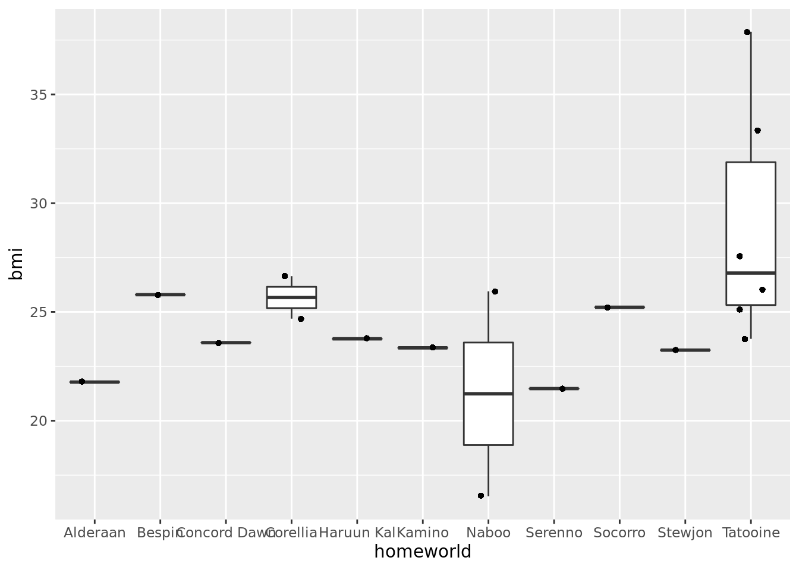

dplyr is a grammar of data manipulation, providing a consistent set of verbs that help you solve the most common data manipulation challenges:
These all combine naturally with group_by() which allows you to perform any operation “by group”.
All verbs work similarly:
Together these properties make it easy to chain together multiple simple steps to achieve a complex result. Let’s dive in and see how these verbs work.
install.packages("dplyr")## Updating HTML index of packages in '.Library'## Making 'packages.html' ... donelibrary("dplyr")##
## Attaching package: 'dplyr'
##
## The following objects are masked from 'package:stats':
##
## filter, lag
##
## The following objects are masked from 'package:base':
##
## intersect, setdiff, setequal, unionWe can call head to see the first 10 rows of a dataset. I am using an available dataset which can be found on the dplyr library
starwarshead(starwars)What does it have starwars? we can call column names function:
colnames(starwars)## [1] "name" "height" "mass" "hair_color" "skin_color"
## [6] "eye_color" "birth_year" "sex" "gender" "homeworld"
## [11] "species" "films" "vehicles" "starships"Now we can do some filtering with dplyr commands
humans <- starwars %>%
filter(species == "Human")
humans_selected_columns <- humans %>%
select(birth_year, gender, mass, height, homeworld)
humans_bmi <- humans_selected_columns %>%
mutate(bmi = mass / ((height / 100) ^ 2)) %>%
arrange(bmi, height, desc(birth_year)) %>%
na.omitWe can visualize as many rows as we want
head(humans_bmi, 15)Lets see if there is any relation between planet and bmi For that why dont we start with one plot? As before we start by installing the library and calling it:
install.packages("ggplot2")## Updating HTML index of packages in '.Library'## Making 'packages.html' ... donelibrary("ggplot2")Lets try a boxplot
p <- ggplot(humans_bmi, aes(x=homeworld, y=bmi))
p <- p + geom_boxplot()
p + geom_jitter(shape=16, position=position_jitter(0.2))
Apparently, Tattoine has a higher bmi than Naboo… but what if we have a statistic to test for it? The issue is that we have a low number of individuals (<10) and special statistics are needed.
Lets get those that have more than one human
humans_bmi %>% count(homeworld)humans_filtered <- humans_bmi %>%
filter(homeworld==c("Tatooine"))
head(humans_filtered, 10)Copyright © 2021 Carlos Sanchez.